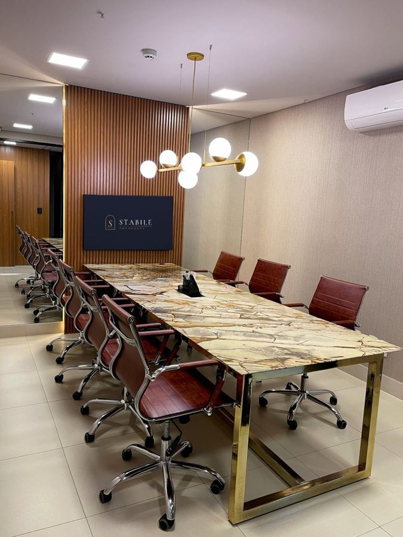

Idosos
Pessoas com 65 anos ou mais que não possuem renda suficiente para o próprio sustento.
Atendimento pelo WhatsApp em todo o Brasil
Fique tranquilo, estamos aqui para te ajudar. Responda 3 perguntas rápidas.
Toque na opção. Não precisa digitar nada.
Escolha a mais próxima.
É o cadastro do CRAS, usado no Bolsa Família.
Um especialista do escritório fala com você pelo WhatsApp.
Seus dados ficam só com o escritório.
Abrimos o WhatsApp do escritório com as suas respostas. Se não abriu, toque abaixo.
Abrir o WhatsAppUm salário mínimo por mês para quem mais precisa
Se você não consegue trabalhar por motivo de saúde, tem 65 anos ou mais ou tem alguém com deficiência na família, o BPC/LOAS pode garantir um salário mínimo por mês, mesmo sem nunca ter contribuído com o INSS.
Atenção importante
O Benefício de Prestação Continuada (BPC), também conhecido como LOAS, é um direito de quem não tem condições de se sustentar. Se você ou alguém da sua família enfrenta um problema de saúde que impede de trabalhar, entenda como esse benefício pode trazer mais segurança e dignidade.
Quem pode receber
É um benefício do INSS que paga um salário mínimo por mês, sem exigir contribuições anteriores.
Pessoas com 65 anos ou mais que não possuem renda suficiente para o próprio sustento.
Quem tem problemas de saúde que impedem de trabalhar e, por isso, de manter o próprio sustento.
Impedimentos físicos, mentais, intelectuais ou sensoriais que dificultam a participação na sociedade. Vale para crianças e adultos.
O que o benefício traz
Quando buscar o BPC/LOAS
Estes são os pontos que o INSS costuma olhar. Se tiver dúvida em algum, a equipe ajuda.

Um “indeferido” não encerra o assunto. Muitas vezes o pedido é negado por detalhes que dá para corrigir, com recurso ou na Justiça.
Como funciona
As perguntas rápidas desta página, ou chama direto no WhatsApp.
Um especialista olha a sua situação e diz quais documentos separar.
Do pedido no INSS à decisão, com notícia a cada etapa do processo.
📱 Você não precisa ir até o escritório. Atendemos em todo o Brasil pelo WhatsApp.
Quem já passou por aqui
★★★★★Excelente atendimento, equipe muito atenciosa, competente e comprometida. Sempre disponível para esclarecer dúvidas e acompanhar cada etapa com transparência.
Isabela Senaavaliação no Google
★★★★★Sou extremamente grato pela dedicação, atenção e profissionalismo durante todo o processo. Obrigado pela forma humana e respeitosa com que fui tratado.
Jhonatan Rangeldepoimento ao escritório
★★★★★Prestação de serviço de alta qualidade. Super indico!
Maria Caroline Roqueavaliação no Google
Rua 14, Ed. Flamboyant Park Business, salas 2602 a 2607, Jardim Goiás, Goiânia (GO). Segunda a sexta, das 9h às 18h.
Dúvidas frequentes
Não. O BPC é um benefício assistencial: não exige contribuição. O que conta é a idade (65 anos ou mais) ou a deficiência / incapacidade, e a renda baixa da família.
O BPC paga um salário mínimo por mês.
Não. O atendimento pode ser feito todo pelo WhatsApp, de qualquer cidade do Brasil. Quem preferir pode ser atendido no escritório, em Goiânia.
Dá para analisar. Dependendo do motivo da negativa, cabe recurso administrativo ou ação judicial. Como existem prazos, o ideal é buscar ajuda logo.
Documento com foto, CPF, comprovante de residência, o número do CadÚnico e, se for por saúde ou deficiência, laudos e exames médicos. Se faltar algo, a equipe orienta.
Os honorários são combinados por escrito com você antes de começar, depois de entender o seu caso.
Se você se encaixa em alguma dessas situações, fale com a nossa equipe. Os advogados acompanham você em todas as etapas do processo.